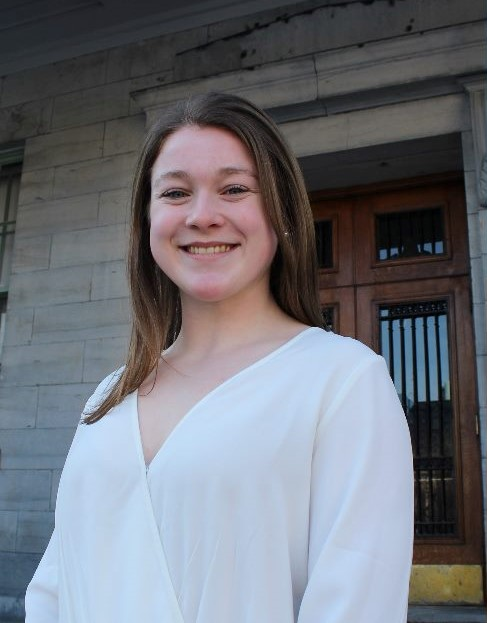
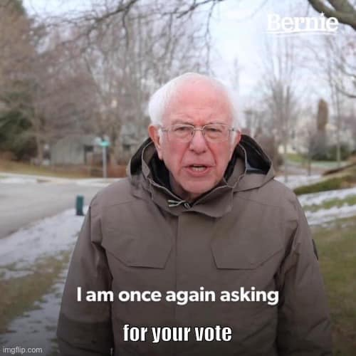

Maddie Avery
Running for VP External
About me:
Hello my fellow science and ArtsSci peers! My name is Maddie Avery (She/her) and I’m a U2 honours physiology student from Kamloops BC. I’m more than excited to announce that I am running to be your SUS VP external for the 2020-2021 academic year!

If elected, I would use my position as VP external to achieve the following objectives.
SPONSORSHIPS
- Reach out to past sponsors and new businesses with marketing budgets to secure sponsors for the 2020-2021 term.
- Finish the sponsorship package initiative set out by the current VP external.
- Work with the future VP internal and event sponsorship coordinators to expand this sponsorship package for SUS events such as frosh and science games.
- Develop long-term relationships with sponsors to ensure funding on a long-term scale for SUS.
ALUMNI
- Create an alumni network to improve alumni-student connections in science.
- Coordinate events with alumni aimed to showcase mentorship opportunities for students.
COMMUNITY
- Work towards finding a permanent space for SUS After hours on the McGill campus which will be more accessible to students.
- Promote After hours as a fun and inclusive space for creating lasting connections with other science students. #weareallbestfriends ♥
If you have any questions about my platform don't hesitate to ask me! I also urge you to check out the platform of the other candidate running for VP external Andrew Lewis
My time at McGill has given me plenty of experience to be suited for VP external. I became an active member of the SUS this year through initiatives with the SUS environment committee (SUSEC). Working with this committee has made me familiar with SUS policies and goals. As co-captain of the varsity women’s rugby team, I understand the skills it takes to work along others to achieve a greater goal. This opportunity has also allowed me to see the importance of maintaining positive relations with alumni and given me insights into funding initiatives such as McGill 24. As a Science frosh leader, Science games captain and Science Fac-O captain, I have been fortunate enough to meet many of our science peers. I will use these experiences and my love for the science community to best represent your views to groups external to the SUS.
Question #1
Hi Maddie!
What are your plans in helping student clubs more involved within the science community?
In the past year, this portfolio has gone through change - this position has a lot of room for growth. Do you have any plans for expanding the VP External portfolio?
Answer #1
Hi bob!
Firstly I would love to continue letting clubs/faculty groups the chance to showcase at after hours. I think this is a great way not only to improve turn out for after hours, but it also gives clubs the chance to share their ideas with fellow science peers. In addition, I want to aid clubs in finding club specific sponsors so they can focus more on their events in the science community. For example, SUSEC this year coordinated with sustainability oriented companies such as Santropol and BKIND and I would love to have a form that clubs can fill out so I can coordinate with them in finding sponsors specific for their events/clubs.
As for expanding the external portfolio, I would love to start improving the alumni presence in the science community as I mentioned in my platform. I believe that this will give science students more opportunities in the community and aid in future successes. On top of that I want to reach out to other undergraduate VP externals to see how the SUS portfolio can improve! Thanks for the awesome question 🙂
Question #2
Hi Maddie!
The SUS has struggled with finding strong sponsorships that are long lasting and provide much revenue. Do you have specific companies in mind/ tactics that would help the SUS maintain long standing partnerships?
Also, do you have any ideas on how to improve the profits made at After Hours to avoid running into a deficit?
Answer #2
Hi Victoria thank you for the great question! Firstly, I think the number one priority to secure sponsorships is to finish the sponsorship package. Without this package there is nothing that gives a cost vs. reward analysis for each external company. In addition to this, it’s important that there is clear access to this package and a portal on the SUS website to direct companies of interest. For example, the MUS is well known for securing lots of sponsors and they have a clear and concise page on their website for sponsorships (https://www.mus.mcgill.ca/sponsorship/). This is an example of something I would like to achieve with SUS in coordination with the future VP communications. Talking to the current VP external, I have learned that there are many sponsorship opportunities with groups like Kaplan and prep 101 which I would like to continue and grow. However, I would also like to reach out to companies such KPMG and capital one who have been known to sponsor other McGill undergraduate societies in the past.
As for after hours, I believe that one of the best ways to improve profits is to find a spot on campus. I do know that this will be very difficult with the constant closure of student spaces, however if 4 à 7, blues pub, and BDA all have access to on campus space I believe that it is very possible to find a spot for after hours. I would also reach out to the managers of each of these events to pool ideas on how they have improved their profits. I’d love to talk with you further if you any other questions 🙂
(This post, text and image copied below, can be found on his campaign page from March 11, at 11:12. However it is not a public post and I am therefore unable to embed it.)
Hello Science/ArtsSci community💕
Only one more day till voting begins!! I hope you all are just as excited as me 🗳
Tonight there will be a meet the candidates meeting in the SUS office (burnside 1B21) with free pizza😍🍕at 5:30 PM. I encourage you to go meet all the lovely candidates in this year’s election!
Unfortunately I have a Biol 301 lab (RIP those 6 hour labs) followed by a midterm 😢 so I won’t be able to make it, but would love to answer any of your questions! Feel free to post on my page before midnight 🕛 or send me a message and we can organize a time to meet this week 😊
Voting period is tomorrow March 12-17th!!!
